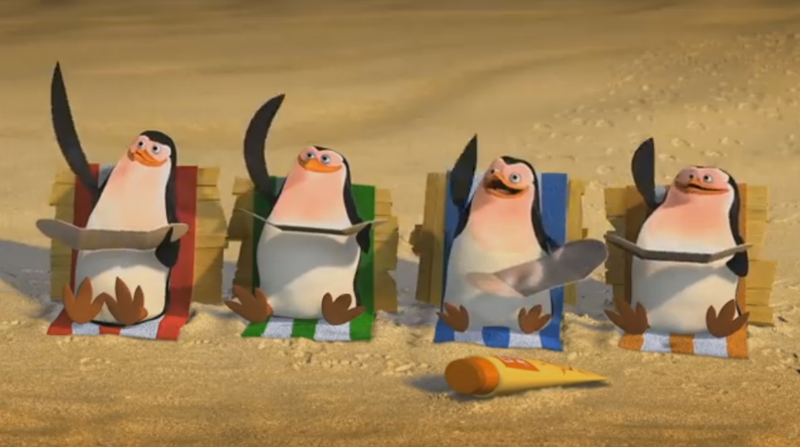
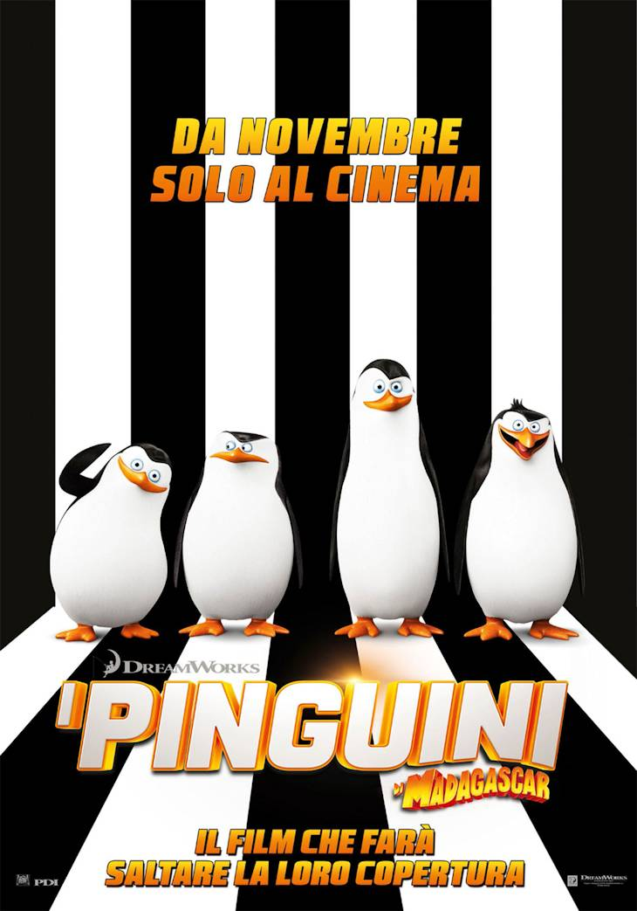

I pinguini di Madagascar (The Penguins of Madagascar) è una serie televisiva a cartoni animati, andata in onda su Nickelodeon negli Stati Uniti dal 2008 al 2015; in Italia è stata trasmessa da Nickelodeon dal 2009 al 2013. È una serie spin-off del franchise di Madagascar, la serie è ambientata dopo Madagascar 2 (2008) e un anno prima di Madagascar 3 - Ricercati in Europa (2012).
Trama
La serie segue le avventure dei pinguini Skipper, Kowalski, Rico e Soldato, inquadrati in una sorta di unità
militare supertecnologica che si dedica a missioni più o meno improbabili, dalla protezione degli altri
animali dello zoo di Central Park, come ad esempio quando arriva un nuovo ospite che minaccia le abitudini
degli animali, al rimediare ai pericoli provocati da malfunzionamenti delle invenzioni dello scienziato del
gruppo (macchine del tempo, nanorobot, congegni per far spostare gli oggetti a distanza ecc.). Il gruppo
dovrà anche vedersela con i guai combinati dal vanaglorioso e pasticcione Re Julien, spedito nello zoo con
Maurice e Mortino da una cassa dal Madagascar (come mostrato nella sigla iniziale).
Gli altri animali dello zoo (gorilla, scimpanzé, lontre e tanti altri) e di Central Park, il personale e i
visitatori abituali del giardino zoologico ed alcuni antagonisti della serie (tra cui un agente umano, una
pulcinella di mare, un topo di fogna e uno scoiattolo di colore rosso), come il dottor Blowhole, un delfino
scienziato malvagio che vuole conquistare il mondo, il più grande nemico dei pinguini, completano il cast
della serie.
Nonostante la serie occasionalmente faccia riferimento al resto del franchise di Madagascar, essa non si
svolge in un momento preciso al suo interno; secondo McGrath, il co-creatore dei personaggi, la serie si
svolgerebbe infatti in una realtà alternativa.
Personaggi
Ogni tanto tutti ci meritiamo una vacanza
Anche loro sono tanti, fidatevi
Luoghi
Le varie serie sono ambientate nello zoo di Central Park. Lo zoo di Hoboken è fittizio, vi vengono trasferiti vari animali nemici dei pinguini come punizione, tra cui: Hans, Savio, Clemson, Rhonda e Lulu.Film
Locandina del film
Dopo il successo della serie animata, nel 2014 fu prodotto un secondo film d'animazione basato sulla serie, questa volta di produzione cinematografica e distribuito nelle sale, il film si svolge dopo il videogioco dedicato alla serie e gli eventi di Madagascar 3 - Ricercati in Europa (2013).
Doppiaggio
| Personaggio | Doppiatore originale | Doppiatore italiano |
|---|---|---|
| Skipper | Tom McGrath | Luigi Ferraro |
| Kowalski | Jeff Bennett | Gerolamo Alchieri |
| Soldato | James Patrick Stuart | Franco Mannella |
| Rico | John DiMaggio | Pasquale Anselmo |
| Re Julien | Danny Jacobs | Oreste Baldini |
| Maurice | Kevin Michael Richardson | Roberto Draghetti |
| Mortino | Andy Richter | Massimiliano Alto |
| Marlene | Nicole Sullivan | Perla Liberatori |
| Alice | Mary Scheer | Beatrice Margiotti |
| Darla | Grey DeLisle | |
| Rhonda | Kathy Kinney | |
| Mason | Conrad Vernon | Massimo Bitossi |
| Max | Wayne Knight | Roberto Stocchi |
| Blowhole | Neil Patrick Harris | Davide Lepore |
| Leonard | Dana Snyder | Nanni Baldini |
| Pervis McSlade | Gary Cole | Renato Cecchetto |
| Savio | Nestor Carbonell | Saverio Indrio |
| Buck Rockgut | Clancy Brown | Teo Bellia |
| Joey | Bill Fagerbakke | Gianluca Crisafi |
| Agente X | Cedric Yarbrough | Mario Bombardieri |
| Clemson | Larry Miller | Franco Zucca |
| Gustav "Gus" Babushka | Fred Tatasciore | Stefano Mondini |
| Zio Nigel | Peter Capaldi | Ambrogio Colombo |
| Barry | Kevin McDonald | Daniele Raffaeli |
| Naniti | Andrea Ward | |
| Alex | Vittorio Guerrieri | |
| Hans | John DiMaggio | Francesco Meoni |
| Cecil | French Stewart | |
| Re Topo | Mauro Magliozzi | |
| Bada | John DiMaggio | |
| Burt | ||
| Brick | ||
| Bing | evin Michael Richardson | Alberto Caneva Gianfranco Miranda |
| Dodò | Stefano Brusa | |
| Zanna | Gemma Donati | |
| Roger | Richard Kind | Alessandro Quarta |
| Ovetto | Gilberta Crispino | |
| Pinky | Kevin Michael Richardson | Gabriele Trentalance |
| Archie | Rob Paulsen | Angelo Maggi |
| Dale | Luca Dal Fabbro | |
| Scoiattolo rosso | Jeff Bennett | Bruno Conti |
| Shelly | Melissa McCarthy | Cristina Boraschi |
| Parker | Carlo Valli | |
| Chuck Charles | Jeff Bennett | Gino Manfredi |
| Conduttrice TG | Valeria Vidali | |
| Gladys | Stefania Romagnoli |